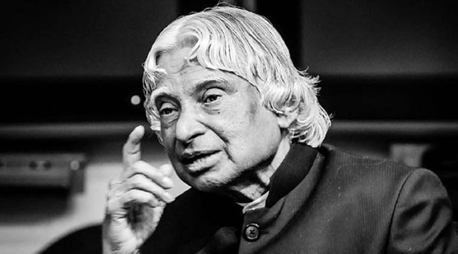

Dr. A. P. J. Abdul Kalam
Former President of India
Missile man of india

Avul Pakir Jainulabdeen Abdul Kalam 15 October 1931 27
July 2015) was an Indian aerospace scientist who served as the 11th
president of India from 2002 to 2007
Here's a time line of Dr. A. P. J. Abdul Kalam life:
- 1931 - born to a Tamil Muslim family in the pilgrimage centre of Rameswaram on Pamban Island
- 1954 - Graduated from Saint Joseph's College affiliated to University of Madras in Physics
- 1954 -He moved to Madras in 1955 to study aerospace engineering in Madras Institute of Technology
- 1955 - He moved to Madras in 1955 to study aerospace engineering in Madras Institute of Technology
- 1966 - After graduating from the Madras Institute of Technology in 1960, Kalam joined the Aeronautical Development Establishment of the Defence Research and Development Organisation (by Press Information Bureau, Government of India) as a scientist after becoming a member of the Defence Research & Development Service (DRDS).
- 1969 -In 1969, Kalam was transferred to the Indian Space Research Organisation (ISRO) where he was the project director of India's first Satellite Launch Vehicle (SLV-III) which successfully deployed the Rohini satellite in near-earth orbit in July 1980; Kalam had first started work on an expandable rocket project independently at DRDO in 1965.[1] In 1969, Kalam received the government's approval and expanded the programme to include more engineers
- 1980 - Despite the disapproval of the Union Cabinet, Prime Minister Indira Gandhi allotted secret funds for these aerospace projects through her discretionary powers under Kalam's directorship. Kalam played an integral role convincing the Union Cabinet to conceal the true nature of these classified aerospace projects. His research and educational leadership brought him great laurels and prestige in the 1980s, which prompted the government to initiate an advanced missile programme under his directorship.
- 1992 - Kalam served as the Chief Scientific Adviser to the Prime Minister and Secretary of the Defence Research and Development Organisation from July 1992 to December 1999. The Pokhran-II nuclear tests were conducted during this period in which he played an intensive political and technological role.
- 1998 - In 1998, along with cardiologist Soma Raju, Kalam developed a low cost coronary stent, named the "Kalam-Raju Stent". In 2012, the duo designed a rugged tablet computer for health care in rural areas, which was named the "Kalam-Raju Tablet"
-
2002 - Kalam served as the 11th president of
India, succeeding K. R. Narayanan. He won the 2002 presidential
election with an electoral vote of 922,884, surpassing the 107,366
votes won by Lakshmi Sahgal. His term lasted from 25 July 2002, to
25 July 2007.
Kalam was the third President of India to have been honoured with a Bharat Ratna, India's highest civilian honour - 2007 - At the end of his term, on 20 June 2007, Kalam expressed his willingness to consider a second term in office provided there was certainty about his victory in the 2007 presidential election.[64] However, two days later, he decided not to contest the Presidential election again stating that he wanted to avoid involving Rashtrapati Bhavan from any political processes. He did not have the support of the left parties, Shiv Sena and UPA constituents, to receive a renewed mandate
- Post Presidency -After leaving office, Kalam became a visiting professor at the Indian Institute of Management Shillong, the Indian Institute of Management Ahmedabad, and the Indian Institute of Management Indore; an honorary fellow of Indian Institute of Science, Bangalore, chancellor of the Indian Institute of Space Science and Technology Thiruvananthapuram; professor of Aerospace Engineering at Anna University; and an adjunct at many other academic and research institutions across India. He taught information technology at the International Institute of Information Technology, Hyderabad, and technology at Banaras Hindu University and Anna University.
- 2011 - In 2011, Kalam was criticised by civil groups over his stand on the Koodankulam Nuclear Power Plant; he supported the establishment of the nuclear power plant and was accused of not speaking with the local people. The protesters were hostile to his visit as they saw him as a pro-nuclear scientist and were unimpressed by the assurances he provided regarding the safety features of the plant
- 2012 - In May 2012, Kalam launched a programme for the youth of India called the What Can I Give Movement, with a central theme of defeating corruption.
- 2005 - states "we will have to double the world food supply by 2050." Argues that genetically modified crops are the only way we can meet the demand, as we run out of arable land. Says that GM crops are not inherently dangerous because "we've been genetically modifying plants and animals for a long time. Long before we called it science, people were selecting the best breeds."
- 2015 - On 27 July 2015, Kalam travelled to Shillong to deliver a lecture on "Creating a Livable Planet Earth" at the Indian Institute of Management Shillong. While climbing a flight of stairs, he experienced some discomfort, but was able to enter the auditorium after a brief rest. At around 6:35 p.m. IST, only five minutes into his lecture, he collapsed. He was rushed to the nearby Bethany Hospital in a critical condition; upon arrival, he lacked a pulse or any other signs of life. Despite being placed in the intensive care unit, Kalam was confirmed dead of a sudden cardiac arrest at 7:45 p.m. IST. His last words, to his aide Srijan Pal Singh, were reportedly: "Funny guy! Are you doing well?"
-- Indian Prime Minister Manmohan Singh